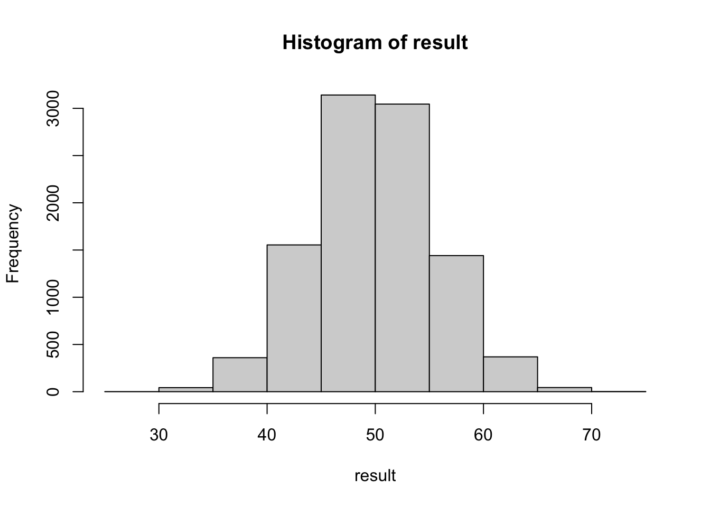

nsim <- 10000
result <- rep(NA, nsim)
for(i in 1:nsim){
exam_score <- runif(25, min = 0, max = 100)
result[i] <- mean(exam_score)
}
hist(result)
mean(result)[1] 49.9073sd(result)[1] 5.749079Central Limit Theorem simulation
In class, we carried out the following simulation to understand the Central Limit Theorem.
Suppose you are teaching a class with n = 25 students. Simulate 25 exam scores from a uniform (0, 100) or normal (mean = 80, sd = 3) or Beta (shape1 = 6, shape2 = 2) distribution and calculate the class AVERAGE of your simulated class. Repeat for 10000 times, each time recording the class average. Plot a histogram of the 10000 simulated class averages and estimate the mean and standard deviation (sd) of this distribution.
nsim <- 10000
result <- rep(NA, nsim)
for(i in 1:nsim){
exam_score <- runif(25, min = 0, max = 100)
result[i] <- mean(exam_score)
}
hist(result)
mean(result)[1] 49.9073sd(result)[1] 5.749079Your results show that, regardless of your starting distribution (uniform, normal, or beta), the simulated class averages are very “well-behaved”: the histogram of the 10000 simulated averages should look normal (symmetric bell-curve) in each case.
Work in groups and submit your groups’ findings in this Google doc. Use screenshot (for code output or plots) as needed.
Design and run a simulation by repeating what you have done above but with different values of \(n\), as well as different starting distributions. For instance, you can start with:
Your group should try three or more different settings. In each case, as before, plot a histogram of the simulated averages to assess normality. In text, summarize your findings: what would you recommend as a sufficient sample size for the Central Limit Theorem to work in different settings? In introductory level statistics courses, we tell students to make sure that the sample size is at least 30. Do you think this is a reasonable cutoff? If someone asks, “my sample size is only 10, do you think I can run hypothesis tests that are based on the Central Limit Theorem?” What would you say?